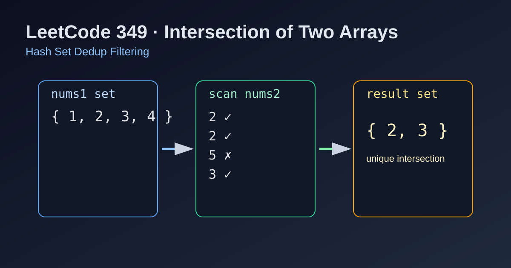

LeetCode 349: Intersection of Two Arrays (Hash Set Dedup Filtering)
LeetCode 349Hash SetDedupArrayToday we solve LeetCode 349 - Intersection of Two Arrays.
Source: https://leetcode.com/problems/intersection-of-two-arrays/

English
Problem Summary
Given two integer arrays nums1 and nums2, return an array of their intersection. Each element in the result must be unique, and order does not matter.
Key Insight
Use one hash set to store all values in nums1. Then scan nums2, and whenever a value exists in the first set, put it into a result set. The result set naturally removes duplicates.
Brute Force and Limitations
Checking each element in nums1 against all elements in nums2 is O(n*m), and handling uniqueness manually is messy and slow.
Optimal Algorithm Steps
1) Insert every element of nums1 into set s1.
2) Create empty set res.
3) For each value in nums2, if s1 contains it, add to res.
4) Convert res to array and return.
Complexity Analysis
Time: O(n + m) average.
Space: O(n + k), where k is intersection size.
Common Pitfalls
- Forgetting uniqueness requirement and returning duplicates.
- Using list lookup for membership (too slow).
- Assuming output order must match input order.
Reference Implementations (Java / Go / C++ / Python / JavaScript)
class Solution {
public int[] intersection(int[] nums1, int[] nums2) {
Set<Integer> s1 = new HashSet<>();
for (int x : nums1) s1.add(x);
Set<Integer> res = new HashSet<>();
for (int y : nums2) {
if (s1.contains(y)) res.add(y);
}
int[] ans = new int[res.size()];
int i = 0;
for (int v : res) ans[i++] = v;
return ans;
}
}func intersection(nums1 []int, nums2 []int) []int {
s1 := map[int]bool{}
for _, x := range nums1 {
s1[x] = true
}
res := map[int]bool{}
for _, y := range nums2 {
if s1[y] {
res[y] = true
}
}
ans := make([]int, 0, len(res))
for v := range res {
ans = append(ans, v)
}
return ans
}class Solution {
public:
vector<int> intersection(vector<int>& nums1, vector<int>& nums2) {
unordered_set<int> s1(nums1.begin(), nums1.end());
unordered_set<int> res;
for (int y : nums2) {
if (s1.count(y)) res.insert(y);
}
return vector<int>(res.begin(), res.end());
}
};class Solution:
def intersection(self, nums1: List[int], nums2: List[int]) -> List[int]:
s1 = set(nums1)
res = set()
for y in nums2:
if y in s1:
res.add(y)
return list(res)var intersection = function(nums1, nums2) {
const s1 = new Set(nums1);
const res = new Set();
for (const y of nums2) {
if (s1.has(y)) res.add(y);
}
return Array.from(res);
};中文
题目概述
给定两个整数数组 nums1 和 nums2，返回它们的交集。结果中的每个元素必须唯一，顺序不限。
核心思路
先用集合保存 nums1 所有元素，再遍历 nums2：若元素在第一个集合中，就加入结果集合。结果集合天然去重。
暴力解法与不足
双重循环逐个匹配是 O(n*m)，而且还要额外处理去重，效率低且实现啰嗦。
最优算法步骤
1）把 nums1 全部放入集合 s1。
2）准备结果集合 res。
3）遍历 nums2，若 s1 包含该值，就加入 res。
4）将 res 转为数组返回。
复杂度分析
时间复杂度：O(n + m)（平均）。
空间复杂度：O(n + k)，其中 k 为交集大小。
常见陷阱
- 忽略“结果元素唯一”要求，返回重复值。
- 用数组做成员查询导致退化为线性查找。
- 误以为结果必须保持原数组顺序。
多语言参考实现（Java / Go / C++ / Python / JavaScript）
class Solution {
public int[] intersection(int[] nums1, int[] nums2) {
Set<Integer> s1 = new HashSet<>();
for (int x : nums1) s1.add(x);
Set<Integer> res = new HashSet<>();
for (int y : nums2) {
if (s1.contains(y)) res.add(y);
}
int[] ans = new int[res.size()];
int i = 0;
for (int v : res) ans[i++] = v;
return ans;
}
}func intersection(nums1 []int, nums2 []int) []int {
s1 := map[int]bool{}
for _, x := range nums1 {
s1[x] = true
}
res := map[int]bool{}
for _, y := range nums2 {
if s1[y] {
res[y] = true
}
}
ans := make([]int, 0, len(res))
for v := range res {
ans = append(ans, v)
}
return ans
}class Solution {
public:
vector<int> intersection(vector<int>& nums1, vector<int>& nums2) {
unordered_set<int> s1(nums1.begin(), nums1.end());
unordered_set<int> res;
for (int y : nums2) {
if (s1.count(y)) res.insert(y);
}
return vector<int>(res.begin(), res.end());
}
};class Solution:
def intersection(self, nums1: List[int], nums2: List[int]) -> List[int]:
s1 = set(nums1)
res = set()
for y in nums2:
if y in s1:
res.add(y)
return list(res)var intersection = function(nums1, nums2) {
const s1 = new Set(nums1);
const res = new Set();
for (const y of nums2) {
if (s1.has(y)) res.add(y);
}
return Array.from(res);
};
Comments